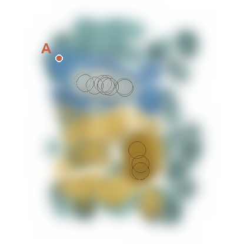
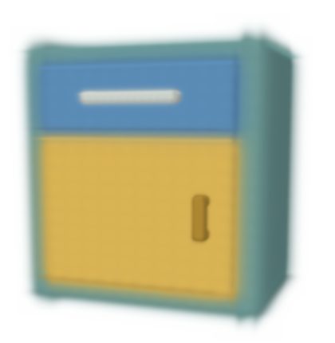
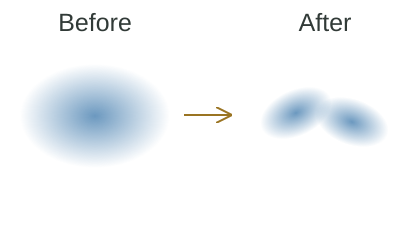
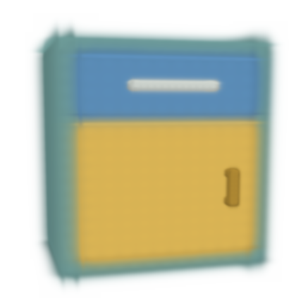

2.5 Reconstruct a cabinet with 3DGS
Specific method · 3D Gaussian Splatting (3DGS)
First, train: use multiple views of the cabinet and their camera information to adjust the 3D Gaussians. Repeatedly render images, compare with the photographs, and update the Gaussians.
Then, render: use the saved Gaussians and a new virtual camera position and settings to produce another view of the same cabinet. No photograph from that new angle is needed.
Start with the prepared inputs
The COLMAP example in Section 2.4.2 estimates camera viewpoints and sparse 3D points. These points provide initial blob locations. The VGGT export in Section 2.4.3 is another supported source of cameras and starting points for a Gaussian training pipeline.
Each initial Gaussian also needs size, orientation, opacity, and appearance. Fitting adjusts these values using the photographs. The result is a set of Gaussian parameters we can save and render from another camera.
Section 2.3.2 showed how to project and blend a given set of Gaussians. Here we use that same rendering operation repeatedly to find better Gaussians.
Fit the cabinet to its photographs
This is a teaching diagram. Rendered cabinet views stand in for photographs; the stages below illustrate the process, rather than showing a recorded training run.
1. Put an initial blob at each 3D point


Points now have size, color, and opacity.
The drawer and handle look blurry.

The image we want to match.
Compare from the same camera position. Otherwise, a difference could simply come from looking at the cabinet from a different angle.
2. Use the image differences to update the blobs
↶ Render again, compare again, update again.
The comparison gives an error: how different are the images? The fitting process uses that error to adjust the blobs. For example, several smaller blobs can describe the handle more precisely than one large, blurry blob.

Change position, size, orientation, color, or opacity.

Clone a blob, or split a large one into smaller ones.

Discard blobs with very low opacity.
These changes happen in 3D, so they affect several camera views. The original 3DGS method alternates parameter updates with adding and removing blobs.
3. Keep checking the other views, too
Many overlapping blobs form a clearer cabinet image.

Render the same 3D blobs from another position.
Fitting repeats across the photographs so that one set of 3D blobs explains many views. We save those blobs and can then render new views. This is the purpose of the 3DGS representation; it does not automatically add a drawer joint or the cabinet’s mass.
Next: reconstruct the cabinet with NeRF. We keep photographs and camera information as inputs, but replace the adjustable set of blobs with a network that answers color-and-density queries.